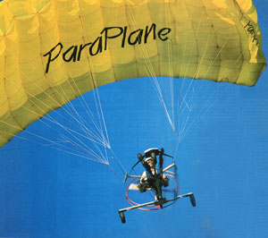
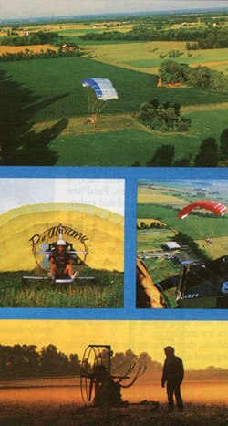
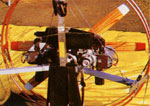

Chute The Sky!
By Richard Freudenberger
September/October 1985
"Power up... full power!" Flight instructor Nathan Taylor's words came crackling through my helmet radio as I eased the throttle forward and began to maneuver down the center of the grass strip. I was strapped squarely in the seat of a unique flexible-wing flying machine-the ParaPlane-and just seconds away from taking off even though I'd never piloted any aircraft before.
For a moment I concerned myself solely with keeping the cart on course and pointed into the wind, as instructed. But before I could really worry about ground-steering control, that problem was suddenly behind me: The ParaPlane lifted its nose and gently rose into the air. A belated peek at the machine's only instrument-a convex mirror mounted just behind the nose wheel-assured me that the airfoil canopy overhead was indeed fully inflated and doing its job. A quick check of the ground below confirmed the fact that I was climbing . . . though perhaps a bit more rapidly than I'd have liked.
Resisting the urge to throttle back, I remembered what Dave Erney, ParaPlane Corporation vice president, had said earlier: "A lot of first-flight students think, well, I'll just take a short hop and see how it feels. They don't realize that the ideal training altitude is three or four hundred feet off the ground, where there's plenty of safety buffer in all directions."
Now that I was high enough, I'd lost reference to things on the field below. I knew I would totally enjoy this new world in the sky-as soon as I learned to maneuver this bird to my satisfaction.
Suddenly, the voice in my ear said, "You're looking good up there . . . reduce power and make your first turn." With my left hand, I nudged the throttle rearward in half-inch increments, which dropped the roar of the twin 210cc, two-cycle engines to a comfortable drone and brought my suspended platform to a level plane. Then I pushed the right foot lever forward about four inches, which initiated a gradual right turn. When I released the lever, the ParaPlane eased out of its mild bank and continued on a straight course.
As I'd been told in my preflight instruction, the foot controls responded gradually to substantial pressure and movement; ParaPlane designer and company president Steve Snyder purposely built them that way to eliminate any surprises caused by slight changes in leg pressure. To test that claim, I removed my foot from its stirrup and gave the lever a long, firm shove at its outer end. After a second's delay, the ParaPlane heeled to the right, this time more sharply than before, and smartly executed its second turn.
Actually, the wing beneath which I was suspended was nothing more than a ram-air parachute used as an airfoil; it generates lift when there is sufficient forward momentum of the prop-driven carriage. The rectangular canopy is tethered so that its leading edge is angled slightly upward when the carriage is in level flight. If power is added, the carriage accelerates, increasing the canopy angle and triggering a climb. Conversely, reductions in power cause the cart to lag behind, nosing the canopy forward slightly and causing a descent. In effect, the ParaPlane maintains a constant airspeed of about 26 mph; throttle settings change altitude, not velocity. The turns I'd just completed were accomplished by control lines fastened to the suspension shrouds: A push on either leer tightens the lines on that side, producing an alteration and subsequent slowing of that part of the airfoil. The bank angle is usually limited to 25° or 30° in either direction, depending on wind conditions.
During our first few hours with the ParaPlane crew, photographer Steve Keull and I had been constantly impressed with the degree of preparation behind the whole ParaPlane program. Snyder, an aeronautical engineer and jet-qualified aerobatic pilot with 6,000 hours in the air and over 3,000 parachute jumps under his belt, developed a number of prototypes before finalizing the design of the craft I was sitting in. Every structural member, fitting, and component of the machine was built to aircraft standards and designed to withstand several times the stress that could ever be placed upon it. The two engines and counter-rotating propeller systems were independent of each other, so one could continue to function if the other failed. The weight and location of the carriage ensured that the ParaPlane could not be forced into a spin, a dive, a stall, or any other aerobatic maneuver; in fact, the 160-pound aircraft couldn't pull any more than 1-1/2 times the force of gravity, even though its design could accommodate 9 Gs. And, most obvious of all, it was held aloft by a fully deployed parachute that would deliver its payload safely to the ground at a congenial 7 mph . . . even with both engines shut off:
Of course, there was still the possibility of pilot error, especially with regard to obstacles. But the ParaPlane people won't let anyone aloft until he or she has been through the first-flight program, which consists of a video and a printed presentation, a written test, hands-on instruction, and a flight demonstration. Even though the Para-Plane fits within the FAA's ultralight-class regulations (which stipulate weight, fuel capacity, and maximum speed limitations, but don't require that the pilot be licensed), the manufacturers and dealers take the initiative to train new students properly.
I was still several hundred feet off the ground, but-as much as I now hated to-it was time for me to come down. My 5-gallon fuel supply wasn't running low, but I had agreed to maintain a prearranged pattern for my maiden flight. So after flying a perimeter, cutting a few figure eights, and swooping in low for a flyby practice approach, I leaned into the final leg and prepared to land.
Once again, the static voice coached me: "Reduce power . . . looking good." I was roof-height above the field and somewhat amazed at the steep descent angle I was charting. In any other aircraft such a rapid descent would end in a very hard landing, yet it seemed that I was merely about to settle down somewhere below my feet. Then came the command: " Full. . . power!": not a desperate warning, but a firm reminder to give the canopy one last lift before touchdown. With no more discomfort than I would have felt riding a bicycle over a shallow curb, the ParaPlane was on the grass and rolling to a stop-I'd already pushed both foot levers forward to drop the canopy and pulled the throttle back to kill the engines. I was on the ground, all in one piece . . . and thoroughly convinced that I'd discovered the safest form of just-for-fun flying that ever existed.
EDITOR'S NOTE: The Model PM-1 ParaPlane is priced at $3,995; modified power systems are available. For information on flight training and local dealerships, contact the ParaPlane Corporation, 5801 Magnolia Ave., Pennsauken, NJ 08109.
|
 The 160- pound ParaPlane can be readily disassembled and carried in the trunk of a full- size car. With the power plant and drive package removed, the carriage can be folded up, the canopy bagged, and the propeller guards dismantled. |
 Two 210cc, 2-cycle Solo engines drive the counter- rotating 51 "" propellers, which are mounted on concentric hubs. (This modified system uses expansion- hamber mufflers to boost power.) The tubular circumference guards also serve as a roll cage for added safety. |
 |
|
 |
|
|